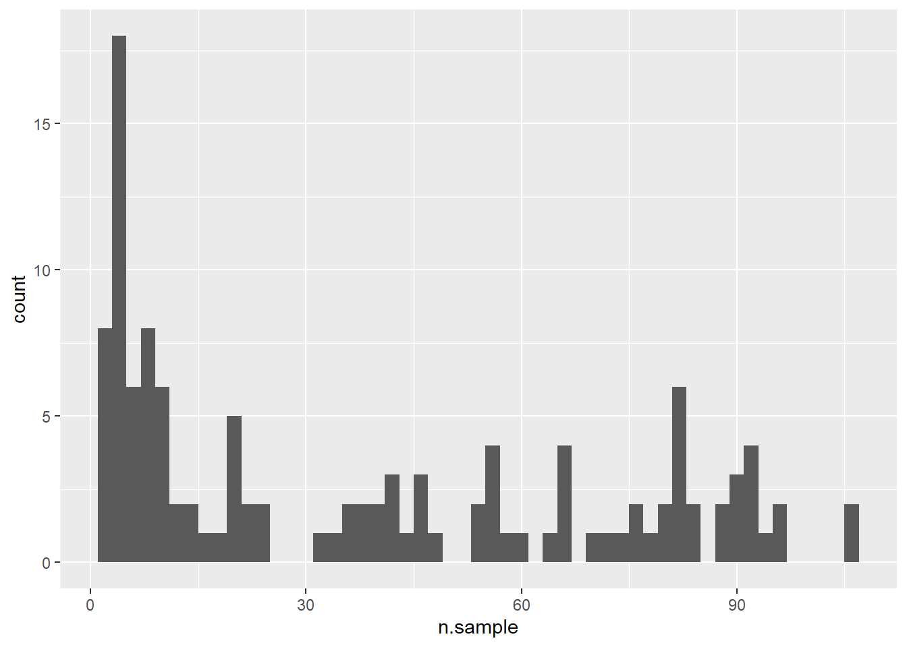
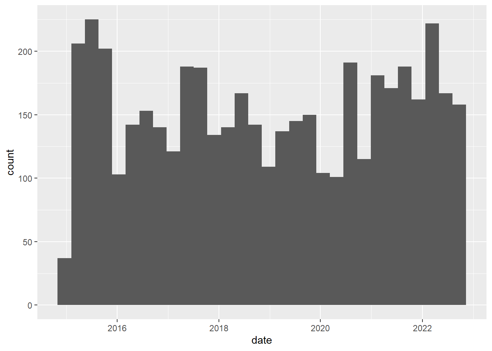
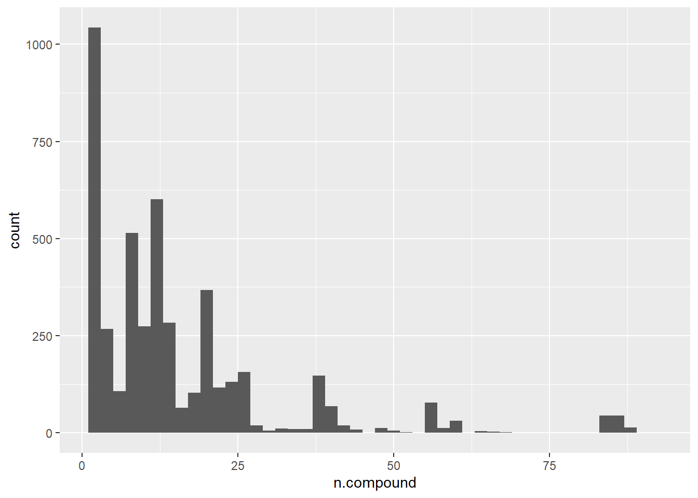
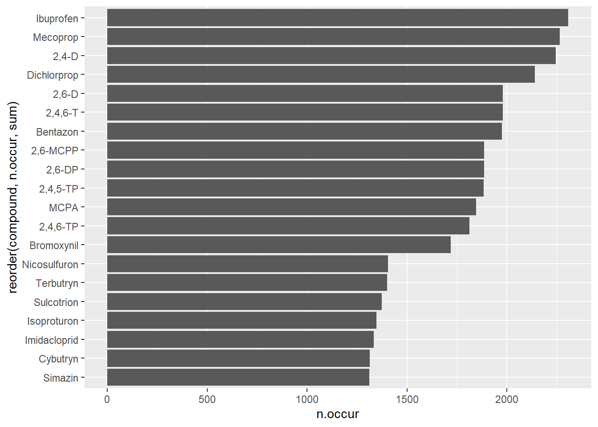

explore brandenburg pesticide data
How many samples?
[1] 4588How many sites?
[1] 120How many samples per site?

When does sampling occur?
`stat_bin()` using `bins = 30`. Pick better value with `binwidth`.
How many compounds per sample?

How many different compounds?
[1] 147How often does each compound occur?

| compound | n.occur |
|---|---|
| Ibuprofen | 2308 |
| Mecoprop | 2265 |
| 2,4-D | 2245 |
| Dichlorprop | 2140 |
| 2,4,6-T | 1981 |
| 2,6-D | 1981 |
| Bentazon | 1976 |
| 2,6-DP | 1887 |
| 2,6-MCPP | 1887 |
| 2,4,5-TP | 1885 |
| MCPA | 1846 |
| 2,4,6-TP | 1814 |
| Bromoxynil | 1719 |
| Nicosulfuron | 1406 |
| Terbutryn | 1400 |
| Sulcotrion | 1374 |
| Isoproturon | 1348 |
| Imidacloprid | 1335 |
| Cybutryn | 1313 |
| Simazin | 1312 |
| Metolachlor | 1271 |
| Terbuthylazin | 1255 |
| Metazachlor | 1240 |
| Chlortoluron | 1100 |
| Diflufenican | 961 |
| Diuron | 935 |
| Alachlor | 907 |
| Atrazin | 907 |
| Flufenacet | 881 |
| Dimoxystrobin | 867 |
| Flurtamone | 867 |
| Fenpropimorph | 846 |
| Aminomethylphosphonsäure(AMPA) | 796 |
| Glyphosat | 791 |
| Napropamid | 773 |
| Carbendazim | 717 |
| Dimethachlor | 710 |
| Cypermethrin | 698 |
| Aclonifen | 671 |
| Bifenox | 671 |
| Quinoxyfen | 671 |
| Ba-gelöst | 623 |
| Triclosan | 553 |
| Dichlorvos | 509 |
| a-HCH_S | 456 |
| b-HCH_S | 456 |
| d-HCH_S | 456 |
| 2,4-DDD_S | 456 |
| 2,4-DDE_S | 456 |
| 2,4-DDT_S | 456 |
| 4,4-DDD_S | 456 |
| 4,4-DDE_S | 456 |
| 4,4-DDT_S | 456 |
| Dicofol | 449 |
| Chlorfenvinphos | 300 |
| Chlorpyrifos,ethyl | 300 |
| Chlorpyrifos,methyl | 300 |
| Dimethoat | 300 |
| Trifluralin | 271 |
| 4-Chlorphenol | 262 |
| 2-Chlorphenol | 256 |
| Heptachlorepoxid cis_S<2000µm | 253 |
| Heptachlorepoxid trans_S<2000µm | 253 |
| Heptachlor_S<2000µm | 253 |
| Metribuzin | 229 |
| a-Endosulfan | 201 |
| a-HCH | 201 |
| Aldrin | 201 |
| b-Endosulfan | 201 |
| b-HCH | 201 |
| d-HCH | 201 |
| Dieldrin | 201 |
| Endrin | 201 |
| Heptachlor | 201 |
| Heptachlorepoxid, cis- | 201 |
| Heptachlorepoxid, trans- | 201 |
| Isodrin | 201 |
| Lindan | 201 |
| 2,4-DDT | 201 |
| 4,4-DDD | 201 |
| 4.4-DDE | 201 |
| 4,4-DDT | 201 |
| Omethoat | 190 |
| Diazinon | 177 |
| Etrimphos | 177 |
| Fenitrothion | 177 |
| Fenthion | 177 |
| Malathion | 177 |
| Parathion,ethyl | 177 |
| Parathion,methyl | 177 |
| Propyzamid | 177 |
| Fluroxypyr | 170 |
| Quinmerac | 170 |
| Chloridazon (Pyrazon) | 157 |
| Hexazinon | 157 |
| Lenacil | 157 |
| Linuron | 157 |
| Metamitron | 157 |
| Pirimicarb | 157 |
| Propiconazol | 142 |
| Dicofol_Z | 126 |
| Methabenzthiazuron | 119 |
| Ametryn | 118 |
| Bromacil | 118 |
| Epoxiconazol | 118 |
| Phoxim | 118 |
| Picolinafen | 118 |
| Prometryn | 118 |
| Monolinuron | 112 |
| Pendimethalin | 112 |
| 2,4-DDD_Z | 112 |
| 2,4-DDE_Z | 112 |
| 2,4-DDT_Z | 112 |
| 4,4-DDD_Z | 112 |
| 4,4-DDE_Z | 112 |
| 4,4-DDT_Z | 112 |
| a-HCH_Z | 111 |
| b-HCH_Z | 111 |
| d-HCH_Z | 111 |
| Metazachlor (ESA-Metabolit) | 80 |
| Metolachlor ESA-Metabolit | 74 |
| Dimethachlor CGA 354742 | 68 |
| Dimethachlor CGA 369873 | 68 |
| Metazachlor BH 479-4 | 62 |
| Metolachlor CGA 357704 | 62 |
| Metolachlor CGA 368208 | 62 |
| Metolachlor NOA 413173 | 62 |
| Metolachlor OA | 62 |
| Heptachlorepoxid-cis_Z | 58 |
| Heptachlorepoxid-trans_Z | 58 |
| Heptachlor_Z | 58 |
| Chloridazon-desphenyl | 45 |
| Chloridazon-methyl desphenyl | 45 |
| Triclosan_Z | 34 |
| Acetamiprid | 12 |
| Clothianidin | 12 |
| Thiacloprid | 12 |
| Thiamethoxam | 12 |
| Cybutryn Metabolit 1 | 9 |
| Pethoxamid | 6 |
| Foramsulfuron | 5 |
| Beta-Cyfluthrin | 4 |
| Bifenthrin | 4 |
| Cyfluthrin | 4 |
| Esfenvalerat | 4 |
| Methoxychlor | 4 |
| Permethrin | 4 |
Map of samples
Run information
R version 4.2.2 (2022-10-31 ucrt)
Platform: x86_64-w64-mingw32/x64 (64-bit)
Running under: Windows 10 x64 (build 22000)
Matrix products: default
locale:
[1] LC_COLLATE=German_Germany.utf8 LC_CTYPE=German_Germany.utf8
[3] LC_MONETARY=German_Germany.utf8 LC_NUMERIC=C
[5] LC_TIME=German_Germany.utf8
attached base packages:
[1] stats graphics grDevices utils datasets methods base
other attached packages:
[1] shiny_1.7.3 conflicted_1.1.0 knitr_1.40 ggplot2_3.4.0
[5] mapview_2.11.0 sf_1.0-9 rstudioapi_0.14 lubridate_1.9.0
[9] timechange_0.1.1 magrittr_2.0.3 dplyr_1.0.10 data.table_1.14.6
[13] readxl_1.4.1
loaded via a namespace (and not attached):
[1] httr_1.4.4 sass_0.4.2 viridisLite_0.4.1
[4] jsonlite_1.8.3 bslib_0.4.1 assertthat_0.2.1
[7] highr_0.9 sp_1.5-1 stats4_4.2.2
[10] cellranger_1.1.0 yaml_2.3.6 pillar_1.8.1
[13] lattice_0.20-45 glue_1.6.2 uuid_1.1-0
[16] digest_0.6.30 promises_1.2.0.1 rvest_1.0.3
[19] leaflet.providers_1.9.0 colorspace_2.0-3 htmltools_0.5.3
[22] httpuv_1.6.6 pkgconfig_2.0.3 raster_3.6-3
[25] xtable_1.8-4 scales_1.2.1 webshot_0.5.4
[28] brew_1.0-8 svglite_2.1.0 terra_1.6-17
[31] satellite_1.0.4 later_1.3.0 tibble_3.1.8
[34] proxy_0.4-27 generics_0.1.3 farver_2.1.1
[37] ellipsis_0.3.2 cachem_1.0.6 withr_2.5.0
[40] cli_3.4.1 mime_0.12 memoise_2.0.1
[43] evaluate_0.18 fansi_1.0.3 xml2_1.3.3
[46] class_7.3-20 tools_4.2.2 lifecycle_1.0.3
[49] stringr_1.4.1 munsell_0.5.0 kableExtra_1.3.4
[52] compiler_4.2.2 jquerylib_0.1.4 e1071_1.7-12
[55] systemfonts_1.0.4 rlang_1.0.6 leafpop_0.1.0
[58] classInt_0.4-8 units_0.8-0 grid_4.2.2
[61] htmlwidgets_1.5.4 crosstalk_1.2.0 leafem_0.2.0
[64] base64enc_0.1-3 labeling_0.4.2 rmarkdown_2.18
[67] gtable_0.3.1 codetools_0.2-18 DBI_1.1.3
[70] R6_2.5.1 fastmap_1.1.0 utf8_1.2.2
[73] KernSmooth_2.23-20 stringi_1.7.8 Rcpp_1.0.9
[76] vctrs_0.5.1 png_0.1-7 leaflet_2.1.1
[79] tidyselect_1.2.0 xfun_0.35